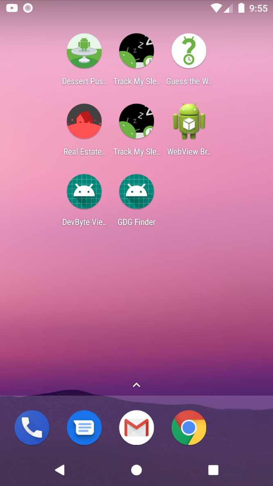
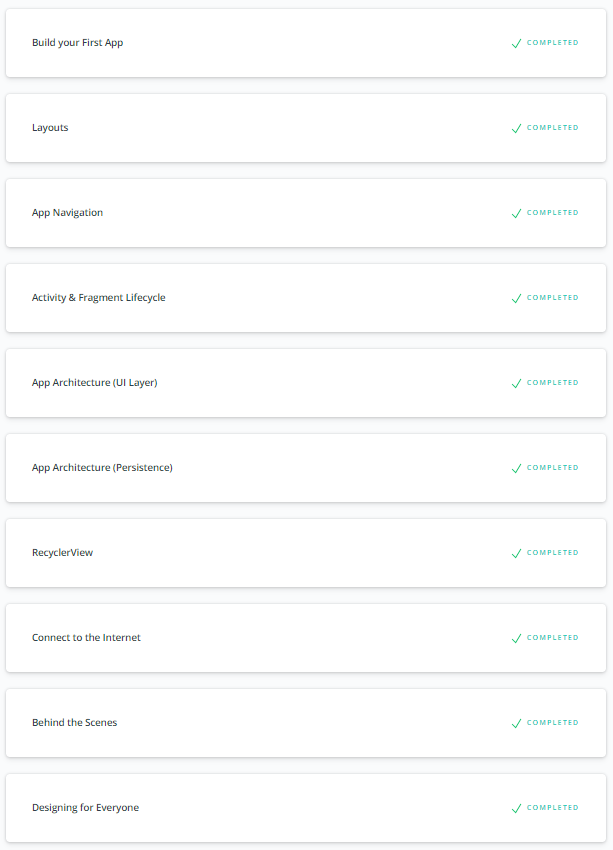
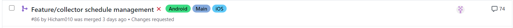
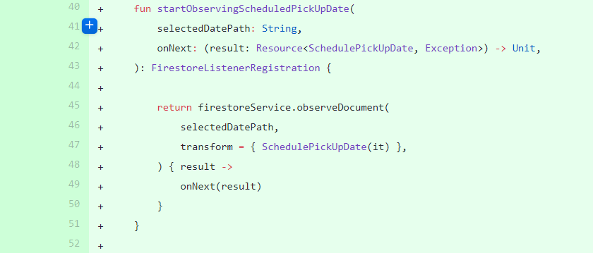
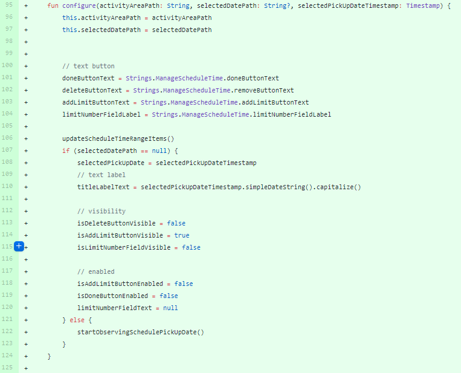
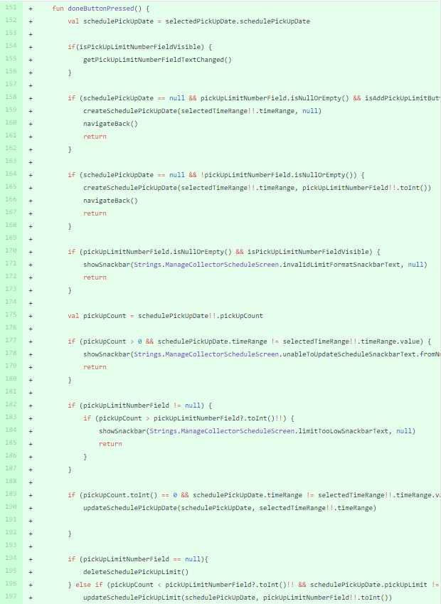
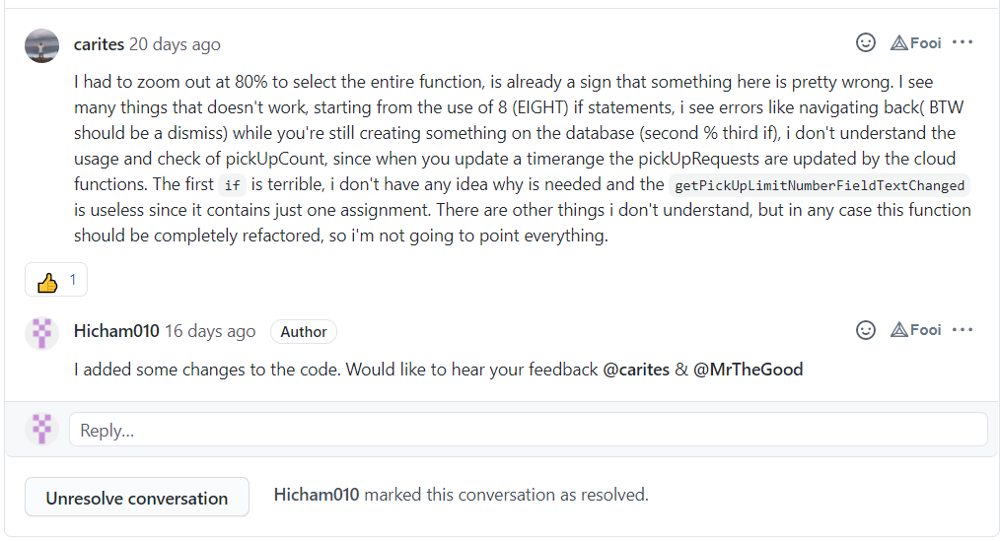
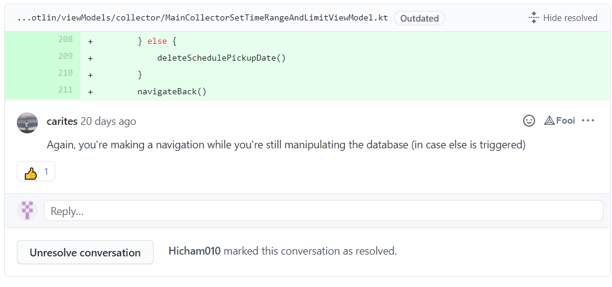
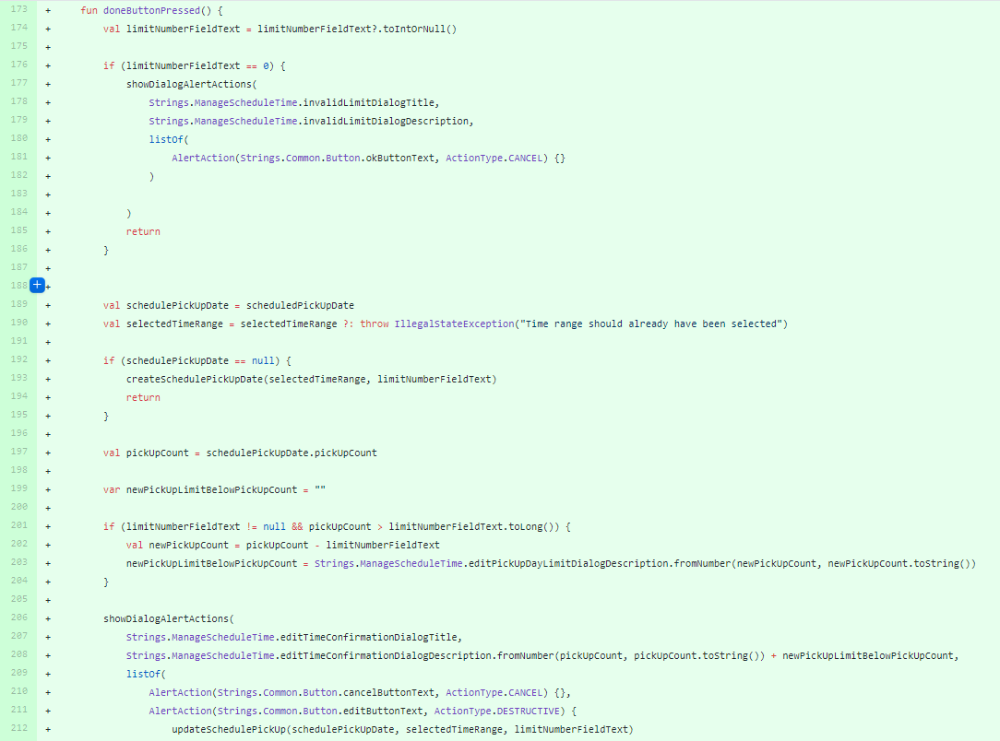
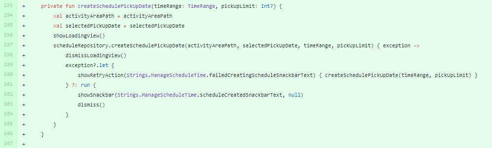

Realiseren
Leerdoel 2:
Ik wil na afloop van mijn stage de programmeertaal Kotlin met Android Studio efficiënt kunnen inzetten om features te programmeren.
Bewijslast
Om aan te tonen dat ik dit leerdoel heb behaald wil ik het volgende aanleveren, de Android Udacity cursus die ik heb gevolgd in Kotlin. De cursus bestaat uit 10 lessen die 8 uur duren per les. Ik heb met behulp van deze cursus de volgende Android applicaties gemaakt (figuur 1). Om aan te tonen dat ik deze opgedane kennis goed heb toegepast wil ik ook het volgende bewijs gebruiken, en dit is mijn pull-request van de volgende feature: “Manage Schedule Collector”. Ik zal ook het design delen om aan te tonen dat ik een feature kan implementeren volgens het ontwerp. Ik heb gekozen voor deze feature omdat dit de moeilijkste feature is die ik heb gemaakt tot nu toe. Het heeft me uitgedaagd om mijn Android en Kotlin vaardigheden te tillen tot een nieuwe hoogte. Het is ook een van de features waar ik geheel zelf de logica heb geschreven. Ik zal een aantal code snippets delen en ik heb ook een GIF gemaakt van de feature om het visueel te maken. Een korte uitleg van de feature. De feature moet de afvalverzamelaar ophaaldagen laten plannen met een tijdinterval en een optionele ophaallimiet.






Feedback
Als feedback zal ik een aantal reacties laten zien die ik heb gekregen op de pull-request. Er zijn veel reacties geweest op mijn pull-request aangezien dit een hele belangrijke feature is maar ik heb gekozen voor deze volgende reacties omdat dit feedback is dat ik kan gebruiken voor mijn volgende features.



Zelfreflectie
Ik heb gekozen voor deze feedback van mij collega, omdat ik er veel van heb geleerd. En dit waren ook wel de grootste blunders die ik heb begaan. Ik heb bij het maken van een functie te veel if-statements gebruikt en ik heb de fout begaan om de code tijdens het schrijven naar het database terug te navigeren, dit resulteert in een crash aan de backend. Ik heb deze feedback verwerkt in mijn code. Dit allemaal is ook terug te zien in figuur 6. Ik heb het aantal if-statements gereduceerd en heb gewacht totdat de functie klaar is met schrijven naar de database om dan pas terug te navigeren naar de vorige pagina. Al deze aanpassingen zijn ook terug te zien in de rest van de figuren (9 en 10) die ik heb

